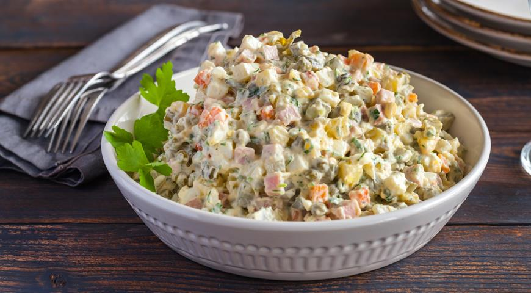

____
Традиционная еда
Щи — это суп с капустой, который придумали еще в XI веке. Список ингредиентов включает мясо, приправы и кислую заправку из капустного рассола.
Пельмени — без преувеличения самое известное за рубежом блюдо русской кухни. Появилось на Урале в конце XIV века. Само название «пельмени» происходит от похожего слова финно-угорской группы языков, которое в буквальном переводе означает «хлебное ухо».
Каша — Каши, как и супы – это то, без чего немыслима русская кухня. Россияне, особенно в детском возрасте, на завтрак всегда едят каши – они полезны и питательны. Манная, перловая, овсяная, гречневая и еще несколько десятков разновидностей.
Русские пироги — Пирог в русской кухне имеет примерно такое же значение, как пицца в итальянской. Русские пироги пекут в основном из несладкого теста с различными начинками – от мясных и рыбных до фруктовых и творожных. Ватрушки, кулебяки, расстегаи, куличи, шаньги, калитки, курники – далеко не полный список разновидностей этого блюда.
Блины — древнейшее блюдо русской кухни, появившееся в IX веке. Рецепт приготовления одного из самых известных русских яств весьма прост — молоко, яйца, соль, а вот процесс приготовления сродни мастерству, овладеть которым под силу не каждой хозяйке. Жидкое тесто выливают на разогретое на сковороде масло, задача повара — испечь румяный ровный блин без комочков и не дать ему сгореть раньше времени.
Оливье — Названный так в честь своего создателя – работавшего в Москве в XIX веке шеф-повара Люсьена Оливье — он обрел особую популярность в советские годы.

____